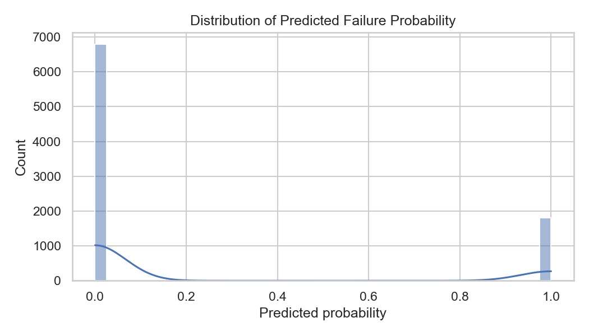
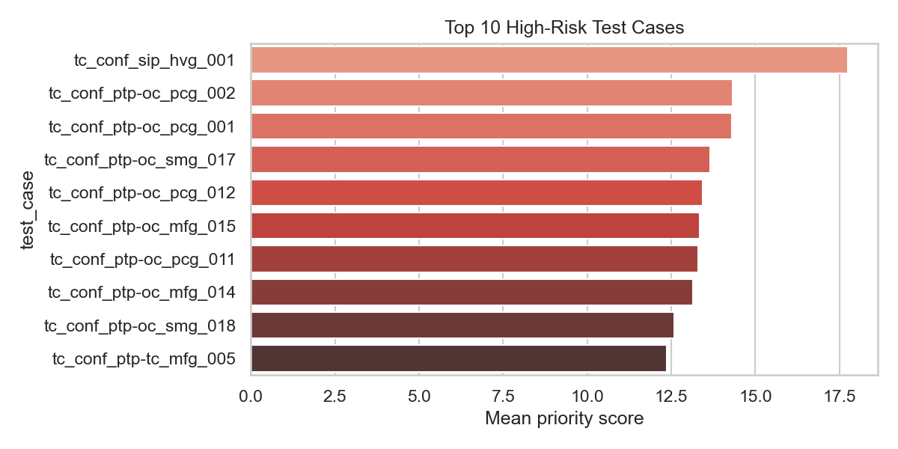
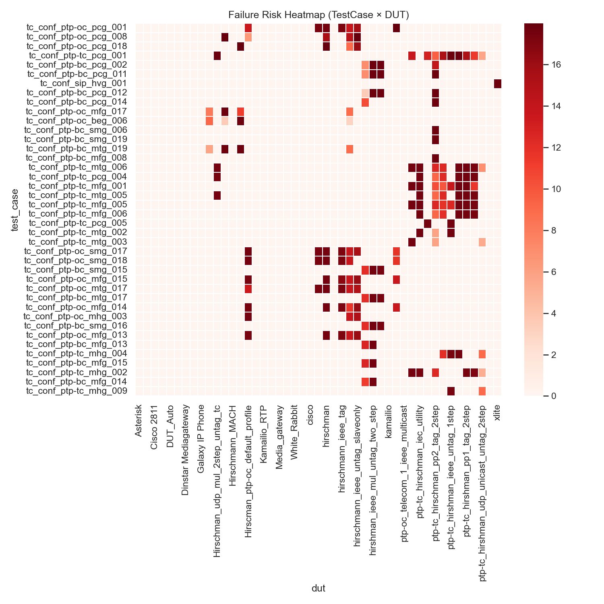
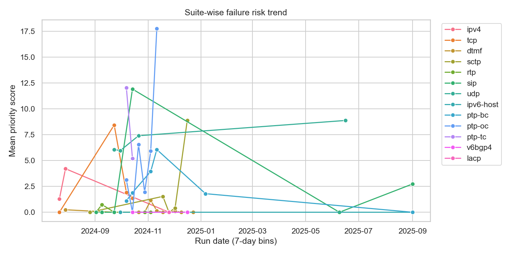
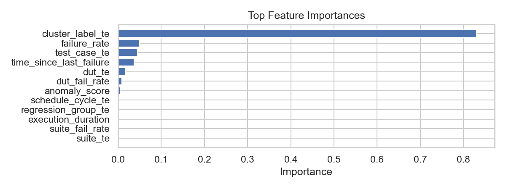

Prioritization Dashboard
Source: data/task4output\prioritized_testcases_xgb.csv — generated: 2025-11-19T12:08:35.599785 UTC
Probability distribution

Top 10 high-risk test cases

Failure risk heatmap

Suite-wise trend

Feature importance
